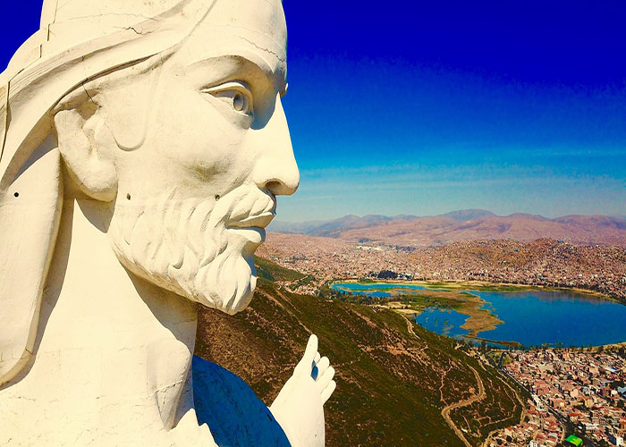
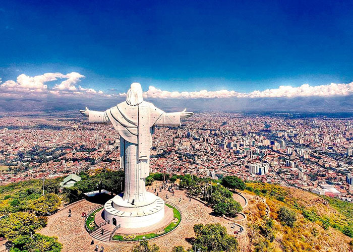
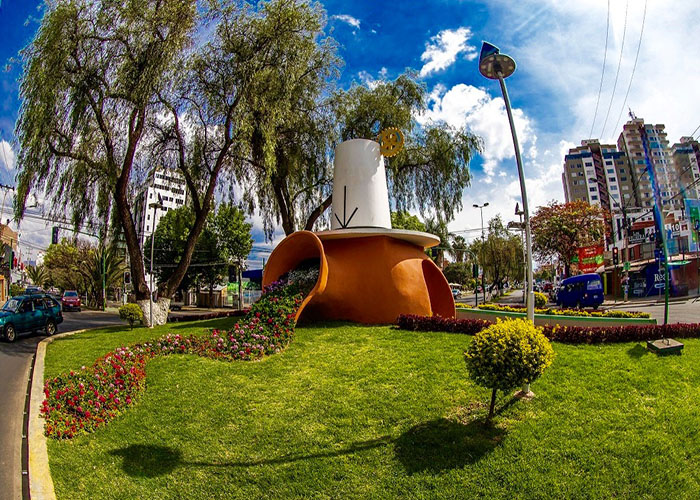
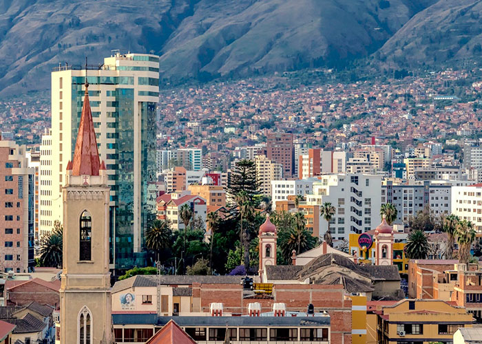
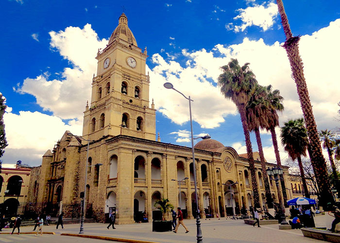
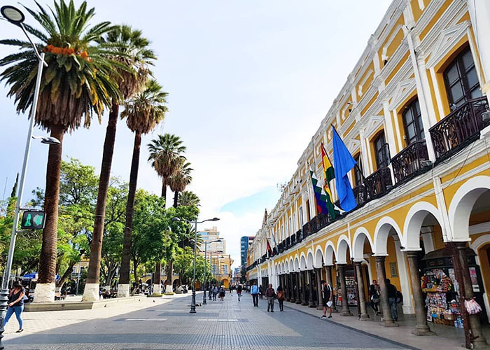

En su interior tiene unas escaleras espirales que te llevan hasta la cabeza del Cristo, lograras contemplar todo el esplendor de la ciudad y la “laguna Alalay”.

Todos los visitantes son recibidos con los brazos abiertos por el Cristo y el pueblo cochabambino, esto es símbolo de la calidez de la gente.

Icono típico de nuestras tradiciones, de nuestra cultura y danza representativa del departamento

Cochabamba es una ciudad del centro de Bolivia.

La Plaza 14 de Septiembre es una plaza ubicada en la ciudad de Cochabamba, Bolivia.

Corresponde a la tipología de plaza de armas, se halla flanqueada por los edificios que representaban el poder estatal y religioso en la ciudad.